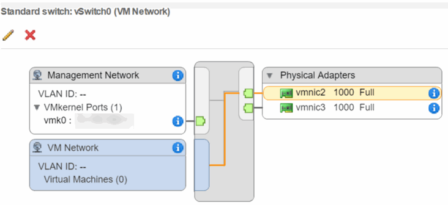
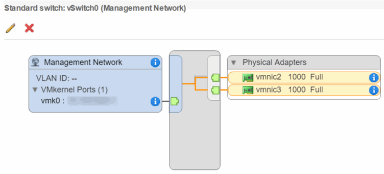
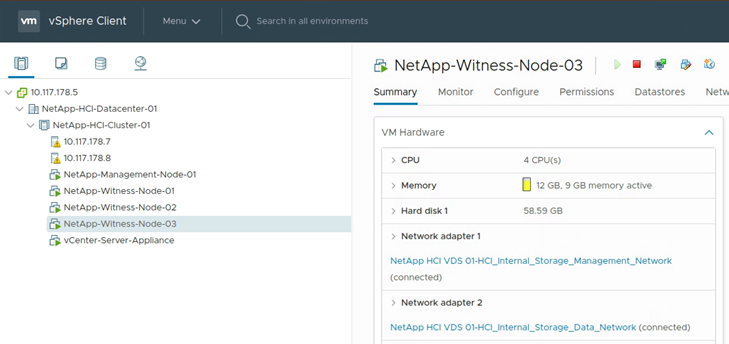
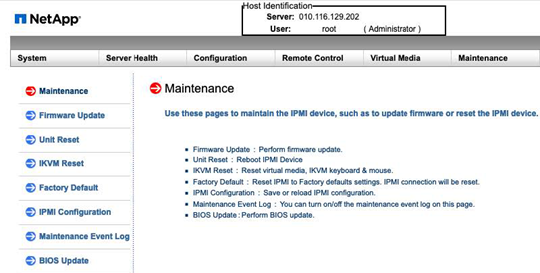

H410Cノードを交換してください
寄稿者
 このページのPDFをダウンロード
このページのPDFをダウンロード
CPU障害、その他のマザーボードの問題が発生した場合、または電源が入らない場合は、計算ノードを交換する必要があります。手順はH410Cノードに適用されます。 NetApp HCIブートストラップOSバージョン1.6P1以降を実行するH410C計算ノードがある場合、メモリDIMMに障害が発生してもノードを交換する必要はありません。故障したDIMMのみを交換する必要があります。ノード内のDIMMに障害が発生していない場合は、交換用ノードでそれらを使用できます。
| 交換ノードには、NetAppHCIインストールの残りの計算ノードと同じバージョンのNetAppHCIブートストラップOSが必要です。 |
計算ノードを交換する必要があると判断しました。
-
交換用の計算ノードがあります。
交換用ノードを注文するには、ネットアップサポートにお問い合わせください。計算ノードは、ブートストラップOSがインストールされた状態で出荷されます。
ノードは、最新バージョンのBootstrapOSとともに工場から出荷されます。次のシナリオでは、ノードで工場出荷時のイメージに戻す（RTFI）プロセスを実行する必要がある場合があります。現在のNetAppHCIインストールでは、最新バージョンより前のバージョンのBootstrapOSが実行されています。この場合、RTFIプロセスは、新しいノードをNetAppHCIインストールが実行されているOSバージョンにダウングレードします。
工場出荷時に出荷されたノードが最新バージョンより前のOSバージョンを実行していて、既存のNetAppHCIインストールがすでに最新バージョンを実行している場合。この場合、RTFIプロセスは、新しいノードのOSバージョンを最新バージョンにアップグレードします。
USBキーを使用してRTFIする方法（ログインが必要）およびBMCを使用してRTFIを実行する方法（ログインが必要）を参照してください。
静電放電（ESD）リストバンドを使用しているか、その他の帯電防止対策を講じています。
計算ノードに接続されている各ケーブルにラベルを付けました。
VMware vSphere Web Clientのアラームは、ノードに障害が発生したときに警告を発します。 VMware vSphere Web Clientの障害が発生したノードのシリアル番号を、ノードの背面にあるステッカーのシリアル番号と一致させる必要があります。
H410C計算ノードを交換するときは、次のことを考慮してください。
H410Cコンピューティングノードを、同じシャーシおよびクラスター内の既存のNetAppHCIコンピューティングノードおよびストレージノードと混在させることができます。
H410C計算ノードは、高線間電圧（200〜240 VAC）でのみ動作します。 H410Cノードを既存のNetAppHCIシステムに追加するときは、電力要件が満たされていることを確認する必要があります。
この手順の手順の概要は次のとおりです。
計算ノードを交換する準備をする
シャーシ内の計算ノードを交換してください
NetApp HCI1.7以降で計算ノードアセットを削除します
計算ノードをクラスターに追加します
2ノードおよび3ノードのストレージクラスターのWitnessノードを再デプロイします
システムに適用可能な特定の条件がある場合に実行する必要がある可能性のある追加のタスクを次に示します。
監視ノードを削除して、コンピューティングリソースを解放します
非標準のBMCパスワードで交換用ノードを受け取った場合は、パスワードを変更してください
ノードのBMCファームウェアをアップグレードします
計算ノードを交換する準備をする
ノードでホストされている仮想マシン（VM）を使用可能なホストに移行し、障害が発生したノードをクラスターから削除する必要があります。シリアル番号やネットワーク情報など、障害が発生したノードに関する詳細を取得する必要があります。
-
VMware vSphere Web Clientで、VMを別の使用可能なホストに移行する手順を実行します。
移行手順については、VMwareのドキュメントを参照してください。 -
インベントリからノードを削除する手順を実行します。手順は、現在インストールされているNetAppHCIのバージョンによって異なります。
NetAppHCIのバージョン番号 ステップ NetApp HCI1.3以降
障害が発生したノードを選択し、[モニター]> [ハードウェアステータス]> [センサー]を選択します。
障害が発生したノードのシリアル番号をメモします。
これは、ノードの背面にあるステッカーのシリアル番号をメモしたシリアル番号と照合することにより、シャーシ内のノードを識別するのに役立ちます。障害が発生したノードを右クリックし、「接続」>「切断」を選択します。
[はい]を選択してアクションを確認します。
失敗したノードを右クリックし、[インベントリから削除]を選択します。
[はい]を選択してアクションを確認します。
1.3より前のNetAppHCIバージョン
ノードを右クリックして、[インベントリから削除]を選択します。
障害が発生したノードを選択し、[モニター]> [ハードウェアステータス]> [センサー]を選択します。
障害が発生したノードのシリアル番号であるノード0のシリアル番号に注意してください。これは、ノードの背面にあるステッカーのシリアル番号をメモしたシリアル番号と照合することにより、シャーシ内のノードを識別するのに役立ちます。
障害が発生したノードを選択した状態で、[管理]> [ネットワーク]> [VMkernelアダプター]を選択し、リストされている4つのIPアドレスをコピーします。
VMware ESXiで初期ネットワーク構成手順を実行するときに、この情報を再利用できます。
シャーシ内の計算ノードを交換してください
障害が発生したノードをクラスターから削除した後、ノードをシャーシから削除して、交換用ノードを取り付けることができます。
| ここでの手順を実行する前に、帯電防止保護が施されていることを確認してください。 |
帯電防止保護を施してください。
新しいノードを開梱し、シャーシ近くの平らな面に置きます。
障害が発生したノードをネットアップに返却するときのために、梱包材を保管してください。削除するノードの背面に挿入されている各ケーブルにラベルを付けます。
新しいノードをインストールした後、ケーブルを元のポートに挿入し直す必要があります。ノードからすべてのケーブルを外します。
DIMMを再利用する場合は、それらを取り外します。
-
ノードの右側にあるカムハンドルを引き下げ、両方のカムハンドルを使用してノードを引き出します。
引き下げる必要のあるカムハンドルには、移動方向を示す矢印が付いています。もう一方のカムハンドルは動かず、ノードを引き出すのに役立ちます。ノードをシャーシから引き出すときは、両手でノードを支えてください。 平らな面にノードを配置します。
ノードをパッケージ化して、NetAppに返す必要があります。以前に障害が発生したノードからDIMMを取り外した場合は、それらを交換用ノードに挿入します。
交換用ノードを、ノードを取り付けるシャーシのスロットに合わせます。
-
カチッという音がするまでノードを押し込みます。
ノードをシャーシにスライドさせるときは、過度の力を加えないようにしてください。 ノードの電源がオンになっていることを確認します。自動的に電源が入らない場合は、ノード前面の電源ボタンを押してください。 -
最初にケーブルを外したポートにケーブルを再接続します。
ケーブルを外したときにケーブルに付けていたラベルは、ガイドとして役立ちます。シャーシの背面にある通気孔がケーブルまたはラベルで塞がれていると、過熱によるコンポーネントの早期故障につながる可能性があります。
ケーブルをポートに無理に押し込まないでください。ケーブル、ポート、またはその両方が損傷する可能性があります。交換用ノードがシャーシ内の他のノードと同じ方法でケーブル接続されていることを確認します。
NetApp HCI1.7以降で計算ノードアセットを削除します
NetApp HCI 1.7以降では、ノードを物理的に交換した後、管理ノードAPIを使用して計算ノードアセットを削除する必要があります。 REST APIを使用するには、ストレージクラスターがNetApp Elementソフトウェア11.5以降を実行している必要があり、バージョン11.5以降を実行している管理ノードをデプロイしている必要があります。
管理ノードのIPアドレスに続けて/ mnodeを入力します。
https://[IP address]/mnode-
[承認]または任意のロックアイコンを選択し、APIを使用するためのアクセス許可のクラスター管理者資格情報を入力します。
クラスターのユーザー名とパスワードを入力します。
値がまだ選択されていない場合は、タイプドロップダウンリストから[リクエスト本文]を選択します。
値がまだ入力されていない場合は、クライアントIDをmnode-clientとして入力します。
クライアントシークレットの値を入力しないでください。-
[承認]を選択してセッションを開始します。
承認しようとした後に Auth Error TypeError: Failed to fetchエラーメッセージが表示された場合は、クラスターのMVIPのSSL証明書を受け入れる必要がある場合があります。トークンURLのIPをコピーし、IPを別のブラウザタブに貼り付けて、再度認証します。トークンの有効期限が切れた後にコマンドを実行しようとすると、Error: UNAUTHORIZEDエラーが発生します。この応答を受け取った場合は、再度承認してください。
[使用可能な認証]ダイアログボックスを閉じます。
GET / assetsを選択します。
[試してみる]を選択します。
[実行]を選択します。
応答本文を下にスクロールして[計算]セクションに移動し、失敗した計算ノードの親とIDの値をコピーします。DELETE / assets / {asset_id} / compute-nodes / {compute_id}を選択します。
[試してみる]を選択します。
手順7で取得した親とIDの値を入力します。[実行]を選択します。
計算ノードをクラスターに追加します
計算ノードをクラスターに追加し直す必要があります。手順は、実行しているNetAppHCIのバージョンによって異なります。
NetApp HCI1.6P1以降
NetApp Hybrid Cloud Controlは、NetAppHCIインストールがバージョン1.6P1以降で実行されている場合にのみ使用できます。
仮想分散スイッチを使用して展開を拡張する場合は、NetAppHCIが使用しているvSphereインスタンスにvSphereEnterprisePlusライセンスがあることを確認してください。
NetAppHCIで使用されているvCenterまたはvSphereインスタンスのいずれにも有効期限が切れていないことを確認してください。
既存のノードと同じネットワークセグメントに空きおよび未使用のIPv4アドレスがあることを確認します（新しいノードはそれぞれ、そのタイプの既存のノードと同じネットワークにインストールする必要があります）。
vCenter管理者アカウントの資格情報が用意されていることを確認してください。
新しい各ノードが、既存のストレージまたはコンピューティングクラスターと同じネットワークトポロジとケーブルを使用していることを確認します。
Webブラウザーを開き、管理ノードのIPアドレスを参照します。例えば：
https://<ManagementNodeIP> ;NetApp HCIストレージクラスター管理者の資格情報を入力して、NetApp Hybrid CloudControlにログインします。
[インストールの展開]ペインで、[展開]を選択します。
NetApp HCIストレージクラスタ管理者の資格情報を入力して、NetApp DeploymentEngineにログインします。
[ようこそ]ページで、[はい]を選択します。
-
[エンドユーザーライセンス]ページで、次の操作を実行します。
VMwareエンドユーザー使用許諾契約書をお読みください。
条件に同意する場合は、契約テキストの最後にある[同意する]を選択します。
[続行]を選択します。
-
vCenterページで、次の手順を実行します。
NetAppHCIインストールに関連付けられているvCenterインスタンスのFQDNまたはIPアドレスと管理者の資格情報を入力します。
[続行]を選択します。
-
新しい計算ノードを追加する既存のvSphereデータセンターを選択するか、[新しいデータセンターの作成]を選択して新しい計算ノードを新しいデータセンターに追加します。
[Create New Datacenter]を選択すると、[クラスター]フィールドに自動的に入力されます。 -
既存のデータセンターを選択した場合は、新しい計算ノードを関連付ける必要があるvSphereクラスターを選択します。
NetApp HCIが選択したクラスターのネットワーク設定を認識できない場合は、管理、ストレージ、およびvMotionネットワークのvmkernelおよびvmnicマッピングがデプロイメントのデフォルトに設定されていることを確認してください。 [続行]を選択します。
[ESXi資格情報]ページで、追加する1つまたは複数の計算ノードのESXiルートパスワードを入力します。
NetAppHCIの最初の展開時に作成されたものと同じパスワードを使用する必要があります。[続行]を選択します。
-
新しいvSphereデータセンタークラスターを作成した場合は、[ネットワークトポロジ]ページで、追加する新しい計算ノードに一致するネットワークトポロジを選択します。
計算ノードが2ケーブルトポロジを使用していて、既存のNetAppHCI展開がVLANIDで構成されている場合にのみ、2ケーブルオプションを選択できます。 -
[利用可能なインベントリ]ページで、既存のNetAppHCIインストールに追加するノードを選択します。
一部の計算ノードでは、vCenterバージョンがサポートする最高レベルでEVCを有効にしてから、インストールに追加する必要がある場合があります。これらの計算ノードでEVCを有効にするには、vSphereクライアントを使用する必要があります。有効にした後、[インベントリ]ページを更新し、計算ノードの追加を再試行してください。 [続行]を選択します。
オプション：新しいvSphereデータセンタークラスターを作成した場合は、[ネットワーク設定]ページで、[既存のクラスターから設定をコピーする]チェックボックスをオンにして、既存のNetAppHCIデプロイメントからネットワーク情報をインポートします。
これにより、各ネットワークのデフォルトゲートウェイとサブネット情報が入力されます。-
[ネットワーク設定]ページで、ネットワーク情報の一部が最初の展開から検出されました。新しい計算ノードはシリアル番号でリストされているため、新しいネットワーク情報を割り当てる必要があります。新しい計算ノードの場合は、次の手順を実行します。
NetApp HCIがネーミングプレフィックスを検出した場合は、それを[Detected Naming Prefix]フィールドからコピーし、[ Hostname]フィールドに追加する新しい一意のホスト名のプレフィックスとして挿入します。
[管理IPアドレス]フィールドに、管理ネットワークサブネット内にある計算ノードの管理IPアドレスを入力します。
[vMotion IPアドレス]フィールドに、vMotionネットワークサブネット内にある計算ノードのvMotionIPアドレスを入力します。
[iSCSI A-IPアドレス]フィールドに、iSCSIネットワークサブネット内にある計算ノードの最初のiSCSIポートのIPアドレスを入力します。
[iSCSI B-IPアドレス]フィールドに、iSCSIネットワークサブネット内にある計算ノードの2番目のiSCSIポートのIPアドレスを入力します。
[続行]を選択します。
-
[ネットワーク設定]セクションの[レビュー]ページで、新しいノードが太字で表示されます。セクションの情報を変更する必要がある場合は、次の手順を実行します。
そのセクションの[編集]を選択します。
変更が完了したら、後続のページで[続行]をクリックして、[レビュー]ページに戻ります。
オプション：クラスター統計とサポート情報をNetAppがホストするSolidFire Active IQサーバーに送信しない場合は、最後のチェックボックスをオフにします。
これにより、NetAppHCIのヘルスと診断のリアルタイム監視が無効になります。この機能を無効にすると、NetAppがNetApp HCIをプロアクティブにサポートおよび監視して、本番環境に影響が及ぶ前に問題を検出および解決する機能が削除されます。[ノードの追加]を選択します。
NetApp HCIがリソースを追加および構成している間、進行状況を監視できます。オプション：新しい計算ノードがvCenterに表示されていることを確認します。
NetApp HCI 1.4 P2、1.4、および1.3
NetApp HCIインストールでバージョン1.4P2、1.4、または1.3が実行されている場合は、NetApp DeploymentEngineを使用してノードをクラスターに追加できます。
仮想分散スイッチを使用して展開を拡張する場合は、NetAppHCIが使用しているvSphereインスタンスにvSphereEnterprisePlusライセンスがあることを確認してください。
NetAppHCIで使用されているvCenterまたはvSphereインスタンスのいずれにも有効期限が切れていないことを確認してください。
既存のノードと同じネットワークセグメントに空きおよび未使用のIPv4アドレスがあることを確認します（新しいノードはそれぞれ、そのタイプの既存のノードと同じネットワークにインストールする必要があります）。
vCenter管理者アカウントの資格情報が用意されていることを確認してください。
新しい各ノードが、既存のストレージまたはコンピューティングクラスターと同じネットワークトポロジとケーブルを使用していることを確認します。
既存のストレージノードの1つの管理IPアドレスを参照します。
http://<storage_node_management_IP_address>/NetApp HCIストレージクラスタ管理者の資格情報を入力して、NetApp DeploymentEngineにログインします。
[インストールの拡張]を選択します。
[ようこそ]ページで、[はい]を選択します。
-
[エンドユーザーライセンス]ページで、次の操作を実行します。
VMwareエンドユーザー使用許諾契約書をお読みください。
条件に同意する場合は、契約テキストの最後にある[同意する]を選択します。
[続行]を選択します。
-
vCenterページで、次の手順を実行します。
NetAppHCIインストールに関連付けられているvCenterインスタンスのFQDNまたはIPアドレスと管理者の資格情報を入力します。
[続行]を選択します。
新しいコンピューティングノードを追加する既存のvSphereデータセンターを選択します。
-
新しい計算ノードを関連付けるvSphereクラスターを選択します。
既存の計算ノードのCPU世代とは異なるCPU世代の計算ノードを追加し、制御するvCenterインスタンスで拡張vMotion互換性（EVC）が無効になっている場合は、続行する前にEVCを有効にする必要があります。これにより、拡張が完了した後のvMotion機能が保証されます。 [続行]を選択します。
[ESXi資格情報]ページで、追加する計算ノードのESXi管理者資格情報を作成します。
NetAppHCIの初期展開時に作成されたものと同じマスター資格情報を使用する必要があります。[続行]を選択します。
-
[利用可能なインベントリ]ページで、既存のNetAppHCIインストールに追加するノードを選択します。
一部の計算ノードでは、vCenterバージョンがサポートする最高レベルでEVCを有効にしてから、インストールに追加する必要がある場合があります。これらの計算ノードでEVCを有効にするには、vSphereクライアントを使用する必要があります。有効にした後、[インベントリ]ページを更新し、計算ノードの追加を再試行してください。 [続行]を選択します。
-
[ネットワーク設定]ページで、次の手順を実行します。
初期展開から検出された情報を確認します。
-
新しい計算ノードはそれぞれシリアル番号でリストされているため、新しいネットワーク情報を割り当てる必要があります。新しいストレージノードごとに、次の手順を実行します。
NetApp HCIがネーミングプレフィックスを検出した場合は、それを[Detected Naming Prefix]フィールドからコピーし、[Hostname]フィールドに追加する新しい一意のホスト名のプレフィックスとして挿入します。
[管理IPアドレス]フィールドに、管理ネットワークサブネット内にある計算ノードの管理IPアドレスを入力します。
[vMotion IPアドレス]フィールドに、vMotionネットワークサブネット内にある計算ノードのvMotionIPアドレスを入力します。
[iSCSI A-IPアドレス]フィールドに、iSCSIネットワークサブネット内にある計算ノードの最初のiSCSIポートのIPアドレスを入力します。
[iSCSI B-IPアドレス]フィールドに、iSCSIネットワークサブネット内にある計算ノードの2番目のiSCSIポートのIPアドレスを入力します。
[続行]を選択します。
-
[ネットワーク設定]セクションの[レビュー]ページで、新しいノードが太字で表示されます。セクションの情報を変更する場合は、次の手順を実行します。
そのセクションの[編集]を選択します。
変更が完了したら、後続のページで[続行]を選択して、[レビュー]ページに戻ります。
オプション：クラスター統計とサポート情報をネットアップがホストするアクティブIQサーバーに送信しない場合は、最後のチェックボックスをオフにします。
これにより、NetAppHCIのヘルスと診断のリアルタイム監視が無効になります。この機能を無効にすると、NetAppがNetApp HCIをプロアクティブにサポートおよび監視して、本番環境に影響が及ぶ前に問題を検出および解決する機能が削除されます。[ノードの追加]を選択します。
NetApp HCIがリソースを追加および構成している間、進行状況を監視できます。オプション：新しい計算ノードがvCenterに表示されていることを確認します。
NetApp HCI 1.2、1.1、および1.0
ノードを物理的に交換した後、ノードをVMware ESXiクラスターに追加し直し、いくつかのネットワーク構成を実行して、使用可能なすべての機能を使用できるようにする必要があります。
| これらの手順を実行するには、コンソールまたはキーボード、ビデオ、マウス（KVM）が必要です。 |
-
次のように、VMwareESXiバージョン6.0.0をインストールして構成します。
リモートコンソールまたはKVM画面で、[電源制御]> [電源リセットの設定]を選択します。
これにより、ノードが再起動します。-
開いた[ブートメニュー]ウィンドウで、下矢印キーを押して[ ESXiインストール]を選択します。
このウィンドウは5秒間だけ開いたままになります。 5秒以内に選択を行わなかった場合は、ノードを再起動する必要があります。 Enterキーを押して、インストールプロセスを開始します。
-
インストールウィザードの手順を完了します。
ESXiをインストールするディスクを選択するように求められたら、下矢印キーを選択して、リストから2番目のディスクドライブを選択する必要があります。ルートパスワードの入力を求められたら、NetAppHCIのセットアップ時にNetAppDeploymentEngineで設定したものと同じパスワードを入力する必要があります。 -
インストールが完了したら、 Enterキーを押してノードを再起動します。
デフォルトでは、ノードはNetAppHCIブートストラップOSで再起動します。 VMware ESXiを使用するには、ノードで1回限りの構成を実行する必要があります。
-
次のように、ノードでVMwareESXiを構成します。
-
NetApp HCIブートストラップOSターミナルユーザーインターフェイス（TUI）のログインウィンドウで、次の情報を入力します。
ユーザー名：要素
パスワード：catchTheFire！
下矢印キーを押して[ OK]を選択します。
Enterキーを押してログインします。
メインメニューで、下矢印キーを使用して、[サポートトンネル]> [サポートトンネルを開く]を選択します。
-
表示されるウィンドウで、ポート情報を入力します。
この情報については、ネットアップサポートにお問い合わせください。ネットアップサポートはノードにログインして、ブート構成ファイルを設定し、構成タスクを完了します。 ノードを再起動します。
-
-
管理ネットワークを次のように構成します。
-
次の資格情報を入力して、VMwareESXiにログインします。
ユーザー名：root
-
パスワード：VMwareESXiのインストール時に設定したパスワード。
パスワードは、NetAppHCIを設定するときにNetAppDeploymentEngineで設定したものと一致する必要があります。
[管理ネットワークの構成]を選択し、 Enterキーを押します。
[ネットワークアダプタ]を選択し、 Enterキーを押します。
vmnic2とvmnic3を選択し、 Enterキーを押します。
[ IPv4構成]を選択し、キーボードのスペースバーを押して静的構成オプションを選択します。
IPアドレス、サブネットマスク、およびデフォルトゲートウェイ情報を入力し、Enterキーを押します。
ノードを削除する前にコピーした情報を再利用できます。ここに入力するIPアドレスは、前にコピーした管理ネットワークのIPアドレスです。Escキーを押して、[管理ネットワークの構成]セクションを終了します。
[はい]を選択して変更を適用します。
-
-
ノード（ホスト）をクラスターに追加し、次のようにノードがクラスター内の他のノードと同期されるようにネットワークを構成します。
VMware vSphere Web Clientで、[ホストとクラスター]を選択します。
-
ノードを追加するクラスターを右クリックし、[ホストの追加]を選択します。
ウィザードは、ホストの追加をガイドします。ユーザー名とパスワードの入力を求められたら、次の資格情報を使用します。
ユーザー名：root
パスワード：NetAppHCIのセットアップ時にNetAppDeploymentEngineで設定したパスワードノードがクラスターに追加されるまでに数分かかる場合があります。プロセスが完了すると、新しく追加されたノードがクラスターの下に一覧表示されます。
-
ノードを選択し、[管理]> [ネットワーク]> [仮想スイッチ]を選択して、次の手順を実行します。
vSwitch0を選択します。
表示されるテーブルにリストされているvSwitch0のみが表示されます。-
表示された図で、[ VMネットワーク]を選択し、[ X ]をクリックしてVMネットワークポートグループを削除します。
 アクションを確認します。
vSwitch0を選択し、鉛筆アイコンを選択して設定を編集します。
vSwitch0- [設定の編集]ウィンドウで、[チーミングとフェイルオーバー]を選択します。
vmnic3がスタンバイアダプタの下にリストされていることを確認し、[ OK]を選択します。
-
表示されたグラフィックで、[管理ネットワーク]を選択し、鉛筆アイコンを選択して設定を編集します。
 [管理ネットワーク-設定の編集]ウィンドウで、[チーミングとフェイルオーバー]を選択します。
矢印アイコンを使用してvmnic3をスタンバイアダプタに移動し、[ OK ]を選択します。
-
[アクション]ドロップダウンメニューから[ネットワークの追加]を選択し、表示されるウィンドウに次の詳細を入力します。
接続タイプとして、[標準スイッチの仮想マシンポートグループ]を選択し、[次へ]を選択します。
ターゲットデバイスの場合、新しい標準スイッチを追加するオプションを選択し、[次へ]を選択します。
+を選択します。
[物理アダプターをスイッチに追加]ウィンドウで、[vmnic0]と[vmnic4]を選択し、[ OK]を選択します。
vmnic0およびvmnic4がアクティブアダプターの下に表示されるようになりました。[次へ]を選択します。
[接続設定]で、VMネットワークがネットワークラベルであることを確認し、[次へ]を選択します。
続行する準備ができたら、[完了]を選択します。
vSwitch1が仮想スイッチのリストに表示されます。
-
vSwitch1を選択し、鉛筆アイコンを選択して、次のように設定を編集します。
[プロパティ]で、[MTU]を9000に設定し、[ OK]を選択します。
表示されるグラフィックで、[ VMネットワーク]を選択し、鉛筆アイコンをクリックして次のように設定を編集します。
-
[セキュリティ]を選択し、次の選択を行います。

[チーミングとフェイルオーバー]を選択し、[上書き]チェックボックスを選択します。
矢印アイコンを使用して、vmnic0をスタンバイアダプタに移動します。
[ OK]を選択します。
-
vSwitch1を選択した状態で、[アクション]ドロップダウンメニューから[ネットワークの追加]を選択し、表示されるウィンドウに次の詳細を入力します。
接続タイプとして、[ VMkernelネットワークアダプター]を選択し、[次へ]を選択します。
ターゲットデバイスの場合、既存の標準スイッチを使用するオプションを選択し、vSwitch1を参照して、[次へ]を選択します。
[ポートのプロパティ]で、ネットワークラベルをvMotionに変更し、[サービスを有効にする]でvMotionトラフィックのチェックボックスを選択して、[次へ]を選択します。
[IPv4設定]で、IPv4情報を入力し、[次へ]を選択します。
ここに入力するIPアドレスは、前にコピーしたvMotionIPアドレスです。続行する準備ができたら、[完了]を選択します。
-
表示されているグラフィックで、vMotionを選択し、鉛筆アイコンを選択して、次のように設定を編集します。
-
[セキュリティ]を選択し、次の選択を行います。

[チーミングとフェイルオーバー]を選択し、[上書き]チェックボックスを選択します。
矢印アイコンを使用して、vmnic4をスタンバイアダプタに移動します。
[ OK]を選択します。
-
-
vSwitch1を選択した状態で、[アクション]ドロップダウンメニューから[ネットワークの追加]を選択し、表示されるウィンドウに次の詳細を入力します。
接続タイプとして、[ VMkernelネットワークアダプター]を選択し、[次へ]を選択します。
ターゲットデバイスの場合、新しい標準スイッチを追加するオプションを選択し、[次へ]を選択します。
+を選択します。
[物理アダプターをスイッチに追加]ウィンドウで、[vmnic1]と[vmnic5]を選択し、[ OK]を選択します。
vmnic1とvmnic5がアクティブアダプタの下に表示されるようになりました。[次へ]を選択します。
[ポートのプロパティ]で、ネットワークラベルをiSCSI-Bに変更し、[次へ]を選択します。
[IPv4設定]で、IPv4情報を入力し、[次へ]を選択します。
ここに入力するIPアドレスは、前にコピーしたiSCSI-BIPアドレスです。続行する準備ができたら、[完了]を選択します。
vSwitch2が仮想スイッチのリストに表示されます。
-
vSwitch2を選択し、鉛筆アイコンを選択して、次のように設定を編集します。
[プロパティ]で、[MTU]を9000に設定し、[ OK]を選択します。
-
表示されたグラフィックで、 iSCSI-Bを選択し、鉛筆アイコンを選択して、次のように設定を編集します。
-
[セキュリティ]を選択し、次の選択を行います。

[チーミングとフェイルオーバー]を選択し、[上書き]チェックボックスを選択します。
矢印アイコンを使用して、vmnic1を未使用のアダプターに移動します。
[ OK]を選択します。
-
-
[アクション]ドロップダウンメニューから[ネットワークの追加]を選択し、表示されるウィンドウに次の詳細を入力します。
接続タイプとして、[ VMkernelネットワークアダプター]を選択し、[次へ]を選択します。
ターゲットデバイスの場合、既存の標準スイッチを使用するオプションを選択し、vSwitch2を参照して、[次へ]を選択します。
[ポートのプロパティ]で、ネットワークラベルをiSCSI-Aに変更し、[次へ]を選択します。
[IPv4設定]で、IPv4情報を入力し、[次へ]を選択します。
ここに入力するIPアドレスは、前にコピーしたiSCSI-AIPアドレスです。続行する準備ができたら、[完了]を選択します。
-
表示されたグラフィックで、 iSCSI-Aを選択し、鉛筆アイコンを選択して、次のように設定を編集します。
-
[セキュリティ]を選択し、次の選択を行います。

[チーミングとフェイルオーバー]を選択し、[上書き]チェックボックスを選択します。
矢印アイコンを使用して、vmnic5を未使用のアダプターに移動します。
[ OK]を選択します。
-
-
新しく追加したノードを選択し、[管理]タブを開いた状態で、[ストレージ] > [ストレージアダプター]を選択し、次の手順を実行します。
+を選択し、ソフトウェアiSCSIアダプターを選択します。
iSCSIアダプターを追加するには、ダイアログボックスで[ OK ]を選択します。
-
[ストレージアダプター]で、iSCSIアダプターを選択し、[プロパティ]タブからiSCSI名をコピーします。

イニシエーターを作成するときにiSCSI名が必要です。
-
NetApp SolidFirevCenterプラグインで次の手順を実行します。
[管理]> [イニシエーター]> [作成]を選択します。
[単一のイニシエーターを作成する]を選択します。
以前にコピーしたIQNアドレスを[IQN / WWPN]フィールドに入力します。
[ OK]を選択します。
[一括操作]を選択し、[ボリュームアクセスグループに追加]を選択します。
NetApp HCIを選択し、[追加]を選択します。
-
VMware vSphere Web Clientの[ストレージアダプター]で、iSCSIアダプターを選択し、次の手順を実行します。
[アダプタの詳細]で、[ターゲット]> [動的検出]> [追加]を選択します。
-
[iSCSIサーバー]フィールドにSVIPIPアドレスを入力します。
SVIP IPアドレスを取得するには、 NetApp Element Managementを選択し、SVIPIPアドレスをコピーします。
デフォルトのポート番号はそのままにしておきます。 3260である必要があります。 [ OK]を選択します。
ストレージアダプタの再スキャンを推奨するメッセージが表示されます。-
再スキャンアイコンを選択します。

[アダプタの詳細]で、[ネットワークポートのバインド]を選択し、[ +]を選択します。
iSCSI-BおよびiSCSI-Aのチェックボックスを選択し、[OK]をクリックします。
ストレージアダプタの再スキャンを推奨するメッセージが表示されます。再スキャンアイコンを選択します。
再スキャンが完了したら、クラスター内のボリュームが新しい計算ノード（ホスト）に表示されているかどうかを確認します。
2ノードおよび3ノードのストレージクラスターのWitnessノードを再デプロイします
障害が発生した計算ノードを物理的に交換した後、障害が発生した計算ノードがWitness Nodeをホストしていた場合は、NetApp HCI Witness NodeVMを再デプロイする必要があります。これらの手順は、2ノードまたは3ノードのストレージクラスターを備えたNetAppHCIインストールの一部である計算ノードにのみ適用されます。
-
次の情報を収集します。
ストレージクラスターからのクラスター名
管理ネットワークのサブネットマスク、ゲートウェイIPアドレス、DNSサーバー、およびドメイン情報
ストレージネットワークのサブネットマスク
ウィットネスノードをクラスターに追加できるようにするには、ストレージクラスターにアクセスできることを確認してください。
-
次の条件を考慮して、既存のWitnessノードをVMware vSphere WebClientまたはストレージクラスターのどちらから削除するかを決定します。
新しいウィットネスノードに同じVM名を使用する場合は、vSphereから古いウィットネスノードへのすべての参照を削除する必要があります。
-
新しいウィットネスノードで同じホスト名を使用する場合は、最初に古いウィットネスノードをストレージクラスターから削除する必要があります。
クラスターが2つの物理ストレージノードのみにダウンしている（およびウィットネスノードがない）場合、古いウィットネスノードを削除することはできません。このシナリオでは、古い監視ノードを削除する前に、まず新しい監視ノードをクラスターに追加する必要があります。
NetApp Element Management拡張ポイントを使用して、クラスタからウィットネスノードを削除できます。
次のシナリオでは、監視ノードを再デプロイする必要があります。
NetApp HCIインストールの一部である障害のある計算ノードを交換しました。このノードには2ノードまたは3ノードのストレージクラスターがあり、障害のある計算ノードはWitness NodeVMをホストしていました。
計算ノードで工場出荷時イメージに戻る（RTFI）手順を実行しました。
ウィットネスノードVMが破損しています。
-
ウィットネスノードVMが誤ってESXiから削除されました。
VMは、NetApp DeploymentEngineを使用した初期デプロイメントの一部として作成されたテンプレートを使用して構成されます。ウィットネスノードVMがどのように見えるかの例を次に示します。
VMware vSphere Web Clientで、[ホストとクラスター]を選択します。
ウィットネスノードVMをホストする計算ノードを右クリックし、[新しい仮想マシン]を選択します。
[テンプレートから展開]を選択し、[次へ]を選択します。
-
ウィザードの手順に従います。
[データセンター]を選択し、VMテンプレートを見つけて、[次へ]を選択します。
-
次の形式でVMの名前を入力します：NetApp-Witness-Node-##
##は数字に置き換える必要があります。 VMの場所のデフォルトの選択をそのままにして、[次へ]を選択します。
宛先コンピューティングリソースのデフォルトの選択をそのままにして、[次へ]を選択します。
ローカルデータストアを選択し、[次へ]を選択します。
ローカルデータストアの空き容量は、コンピューティングプラットフォームによって異なります。展開オプションのリストから[作成後に仮想マシンをパワーオンする]を選択し、[次へ]を選択します。
選択内容を確認し、[完了]を選択します。
-
次のように、管理およびストレージネットワーク、および監視ノードのクラスター設定を構成します。
VMware vSphere Web Clientで、[ホストとクラスター]を選択します。
ウィットネスノードを右クリックし、まだ電源がオンになっていない場合は電源をオンにします。
監視ノードの概要ビューで、[ Webコンソールの起動]を選択します。
ウィットネスノードが青色の背景のメニューで起動するのを待ちます。
メニューにアクセスするには、コンソール内の任意の場所を選択します。
-
管理ネットワークを次のように構成します。
下矢印キーを押して[ネットワーク]に移動し、 Enterキーを押して[OK]をクリックします。
[ネットワーク構成]に移動し、 Enterキーを押して[OK]をクリックします。
net0に移動し、 Enterキーを押して[OK]をクリックします。
-
[IPv4]フィールドが表示されるまでTabキーを押し、該当する場合は、フィールドの既存のIPを削除して、監視ノードの管理IP情報を入力します。サブネットマスクとゲートウェイも確認してください。
VLANタギングはVMホストレベルでは適用されません。タグ付けはvSwitchで処理されます。 Tabキーを押して[OK]に移動し、 Enterキーを押して変更を保存します。
管理ネットワークの設定後、画面はネットワークに戻ります。
-
次のようにストレージネットワークを構成します。
下矢印キーを押して[ネットワーク]に移動し、 Enterキーを押して[OK]をクリックします。
[ネットワーク構成]に移動し、 Enterキーを押して[OK]をクリックします。
net1に移動し、 Enterキーを押して[OK]をクリックします。
[IPv4]フィールドが表示されるまでTabキーを押し、該当する場合は、フィールドの既存のIPを削除して、監視ノードのストレージIP情報を入力します。
Tabキーを押して[OK]に移動し、 Enterキーを押して変更を保存します。
-
MTUを9000に設定します。
ウィットネスノードをクラスターに追加する前にMTUが設定されていない場合、MTU設定の不整合に関するクラスター警告が表示されます。これにより、ガベージコレクションの実行が妨げられ、パフォーマンスの問題が発生する可能性があります。 Tabキーを押して[OK]に移動し、 Enterキーを押して変更を保存します。
ストレージネットワークの構成後、画面はネットワークに戻ります。
-
次のようにクラスター設定を構成します。
Tabキーを押して[キャンセル]に移動し、 Enterキーを押します。
[クラスター設定]に移動し、 Enterキーを押して[OK]をクリックします。
Tabキーを押して[設定の変更]に移動し、 Enterキーを押して[設定の変更]に移動します。
Tabキーを押して[ホスト名]フィールドに移動し、ホスト名を入力します。
下矢印キーを押して[クラスター]フィールドにアクセスし、ストレージクラスターからクラスター名を入力します。
Tabキーを押して[OK]ボタンに移動し、 Enterキーを押します。
-
次のように、ウィットネスノードをストレージクラスターに追加します。
vSphere Web Clientから、[ショートカット]タブまたはサイドパネルからNetApp ElementManagement拡張ポイントにアクセスします。
NetApp Element Management> Clusterを選択します。
[ノード]サブタブを選択します。
ドロップダウンリストから[保留中]を選択して、ノードのリストを表示します。
監視ノードが保留ノードリストに表示されます。追加するノードのチェックボックスを選択し、[ノードの追加]を選択します。
アクションが完了すると、ノードがクラスターのアクティブノードのリストに表示されます。
非標準のBMCパスワードで交換用ノードを受け取った場合は、パスワードを変更してください
一部の置換ノードには、ベースボード管理コントローラー（BMC）UIの非標準パスワードが付属している場合があります。非標準のBMCパスワードを持つ交換ノードを受け取った場合は、パスワードをデフォルトのADMINに変更する必要があります。
-
非標準のBMCパスワードで交換ノードを受け取ったかどうかを確認します。
-
受け取った交換ノードの背面にあるIPMIポートの下にあるステッカーを探します。 IPMIポートの下にステッカーがある場合は、非標準のBMCパスワードを持つノードを受け取ったことを意味します。次のサンプル画像を参照してください。

パスワードをメモします。
-
ステッカーに記載されている一意のパスワードを使用して、BMCUIにログインします。
[工場出荷時のデフォルト]を選択し、[現在の設定を削除]を選択して、ユーザーのデフォルトを[管理/管理]ラジオボタンに設定します。
[復元]を選択します。
ログアウトしてから再度ログインし、資格情報が変更されたことを確認します。
ノードのBMCファームウェアをアップグレードします
計算ノードを交換した後、ファームウェアのバージョンをアップグレードする必要がある場合があります。
最新のファームウェアファイルは、 ネットアップサポートサイトのドロップダウンメニューからダウンロードできます（ログインが必要です） 。
ベースボード管理コントローラー（BMC）UIにログインします。
-
[メンテナンス]> [ファームウェアアップデート]を選択します。

-
BMCコンソール内から[メンテナンス]を選択します。
 -
[メンテナンス]タブ内で、UIの左側のナビゲーションから[ファームウェアアップデート]を選択し、[アップデートモードに入る]を選択します。

確認ダイアログボックスで[はい]を選択します。
アップロードファームウェアをアップロードするファームウェアイメージを選択し、選択するには、[参照]を選択します。
ノードのすぐ近くの外の場所からファームウェアをロードすると、ロード時間が長くなり、タイムアウトが発生する可能性があります。構成の保持チェックを許可し、 [アップグレードの開始]を選択します。
アップグレードには約5分かかります。アップロード時間が60分を超える場合は、アップロードをキャンセルして、ノードの近くにあるローカルマシンにファイルを転送します。
セッションがタイムアウトした場合、BMC UIのファームウェア更新領域に再度ログインしようとすると、いくつかのアラートが表示される場合があります。アップグレードをキャンセルすると、ログインページにリダイレクトされます。更新が完了したら、[ OK]を選択し、ノードが再起動するのを待ちます。
アップグレード後にログインし、[システム]を選択して、ファームウェアリビジョンのバージョンがアップロードしたバージョンと一致することを確認します。
 Edit on GitHub
Edit on GitHub